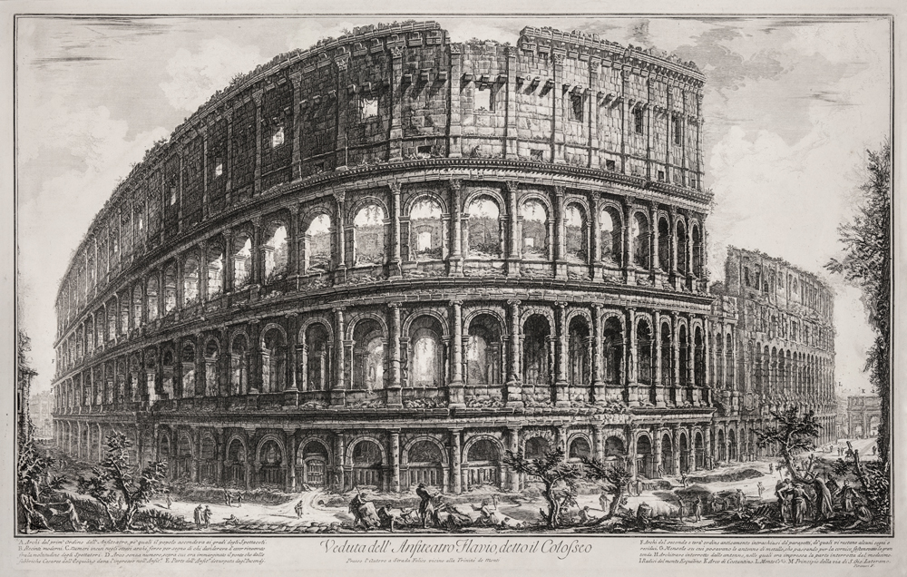

отрывки: Wonder Monuments
Цитаты
к другим Цитатам

come to Egypt
as a feeling of
even modern
has been defined as
mighty monuments
surprise curiosity
many of these visitors
that we now accept
in the earliest days of
the only one of course
the great pyramid of Cheops
and astonishment
Предыдущая история
Следующая история (нет пока)